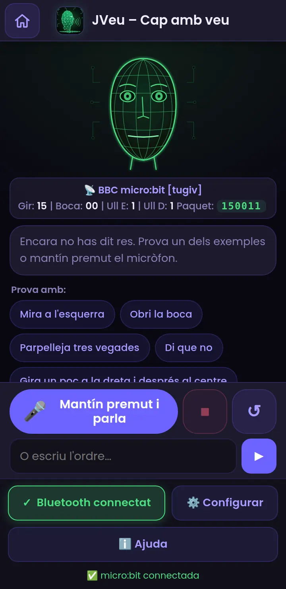
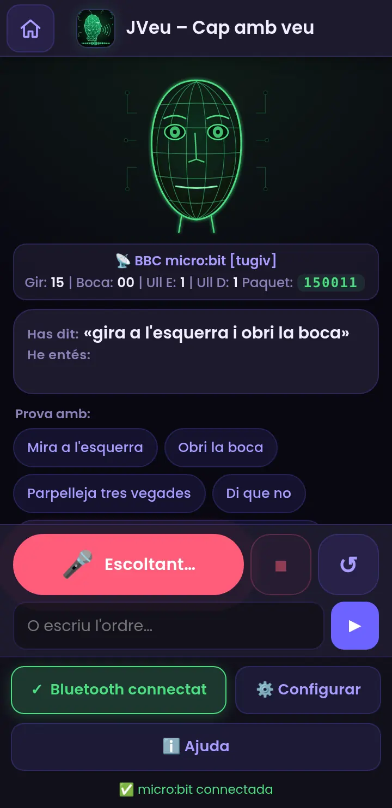
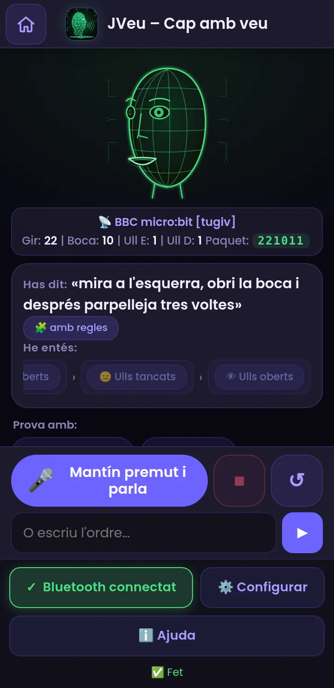
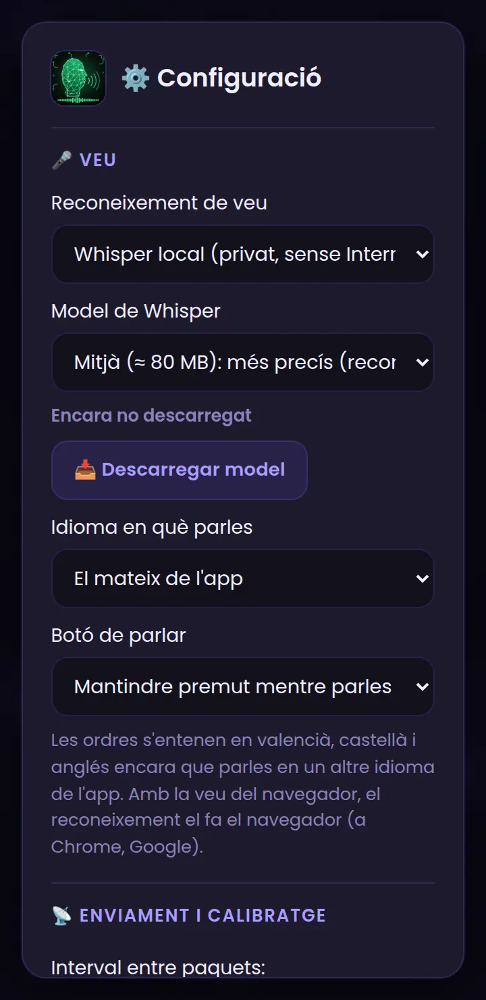
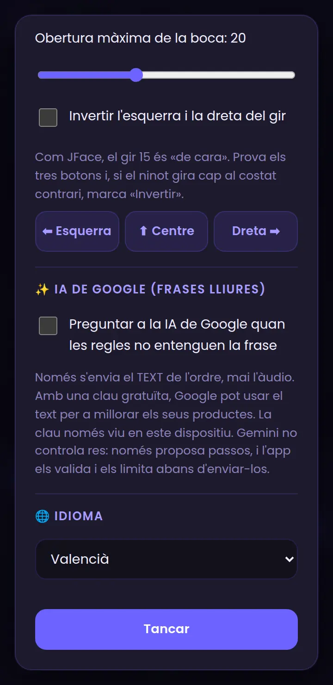

JVeu, pas a pas
Mou el cap de la micro:bit amb la veu: l'app entén l'ordre, la converteix en el missatge de JFace i l'envia per Bluetooth.
Què és i com funciona
JVeu (Cap amb veu) mou el cap de la micro:bit amb la teua veu. Digues «mira a l'esquerra, obri la boca i parpelleja tres vegades» i el mòbil ho entén, ho converteix en el mateix missatge de 6 dígits que JFace i l'envia per Bluetooth. Per això no cal canviar res al programa de la micro:bit: el que ja tens per a JFace val.
Què necessites
- Un mòbil Android amb Chrome (o un ordinador amb Chrome o Edge). En iPhone/iPad el Bluetooth web no funciona, però pots provar la veu amb el cap virtual.
- Una micro:bit amb el programa de JFace (guia de JFace). Sense micro:bit també val: es mou el cap virtual de la pantalla.
- Un micròfon (el del mòbil) i, per a la veu del navegador, Internet; amb Whisper local no cal Internet després de descarregar el model.
Prepara la micro:bit
JVeu usa exactament el mateix programa que JFace: un servei UART Bluetooth que llig el text de 6 dígits i el reparteix a un servo de gir, un servo de boca i dos LEDs d'ulls.
- Segueix la guia de JFace (MakeCode, extensió Bluetooth, «sense vinculació», blocs i connexions) i descarrega el programa a la micro:bit.
- Si ja el tens per a JFace, no cal fer res més.
Connecta la micro:bit amb JVeu
Amb la micro:bit encesa i el programa descarregat:
- Obri JVeu en Chrome (Android) i permet l'accés a la càmera quan el navegador ho demane.
- Comprova que el Bluetooth del mòbil està activat (i, en Android 11 o anterior, també la ubicació; en Android 12 o posterior, el permís de dispositius propers).
- Prem 🔵 Connectar Bluetooth.
- Chrome mostra la llista de dispositius. Tria BBC micro:bit [tugiv] i prem Vincula (Pair).
- Si tot va bé, el botó es posa verd i diu ✓ Bluetooth connectat, apareix el nom del dispositiu i la micro:bit mostra una ✔ un instant.

Parla (o escriu) una ordre
A la part de baix tens el botó del micròfon i, sota, un camp per a escriure l'ordre si no pots parlar.


- Mantín premut el botó 🎤 (el cercle roig indica que t'escolta).
- Digues l'ordre amb normalitat, p. ex. «mira a l'esquerra i obri la boca».
- Deixa de prémer: l'app transcriu la frase i veuràs «Has dit» i «He entés» (els passos, un a un).
- El cap virtual i la micro:bit es mouen pas a pas. El pas actual es ressalta en verd.
Si vols, a Configuració pots canviar el botó perquè tocar per a començar i tocar per a acabar (útil si tens la mà ocupada). Els botons ⏹ i ↺ al costat del micròfon paren el moviment o centren el cap. Sota hi ha exemples per a provar sense parlar.
Què pots dir
| Tipus | Exemples | Què fa |
|---|---|---|
| Gir | «mira a l'esquerra» · «gira a la dreta» · «al centre» · «un poc a la dreta» · «molt a l'esquerra» · «al 80 % a la dreta» · «gira 45 graus a l'esquerra» | Mou el cap. «Un poc» i «molt» ajusten la quantitat; també valen percentatges i graus; «un poc més» suma al que ja hi havia. |
| Boca | «obri la boca» · «tanca la boca» · «obri molt la boca» · «obri la boca al 50 %» | Obri o tanca la boca amb la quantitat que indiques. |
| Ulls | «tanca els ulls» · «obri els ulls» · «tanca l'ull dret» · «guinya l'ull» | Cada ull és 0 (tancat) o 1 (obert). |
| Gestos | «parpelleja tres vegades» · «di que no» · «parla» · «badalla» · «riu» · «dorm» · «desperta» · «escaneja» · «balla» | Són seqüències de moviments que l'app genera: la micro:bit només rep paquets normals. |
| Seqüències | «mira a l'esquerra i després a la dreta» · «obri la boca, tanca els ulls i després centra» | Uneix passos amb després, i després, una coma o i. |
| Velocitat | «poc a poc» · «ràpid» · «repeteix» · «tres vegades» | Canvia el ritme o repeteix. |
| Parar i centrar | «para» · «stop» · «centra» · «reinicia» | Atura el moviment o torna a la posició inicial. |
Pots parlar en valencià, castellà o anglés, i fins i tot barrejar-los: les regles ho entenen tot alhora. També entén els números en paraules («tres», «cinquanta»).
Del que dius al missatge que s'envia
Cada pas es transforma en un text de 6 dígits, igual que a JFace. Per exemple, «obri la boca» a mitges: 150011 → 151011. Si dius «mira a l'esquerra, obri la boca i parpelleja», la micro:bit rep una successió de missatges, un darrere l'altre:
| Camp | Què significa | Valors |
|---|---|---|
| Gir (dígits 1–2) | Gir horitzontal del cap | 15 = de cara. Cap a un costat puja (fins a ≈ 25) i cap a l'altre baixa (fins a ≈ 5). El recorregut es pot ajustar. |
| Boca (dígits 3–4) | Obertura de la boca | 00 = tancada; fins a l'«obertura màxima» de la configuració (20 per defecte). |
| Ull E / Ull D (dígits 5 i 6) | Cada ull | 0 tancat · 1 obert |
Els missatges s'envien només quan alguna cosa canvia, a un ritme que marca l'interval entre paquets (0,1 s per defecte): el moviment és suau perquè l'app va creant posicions intermèdies.
Veu del navegador o Whisper local


A ⚙️ Configurar → Veu tries qui transcriu el que dius:
| Navegador | Whisper local | |
|---|---|---|
| Com funciona | El reconeixement de veu del navegador. | Un model d'IA (Whisper) que s'executa al teu dispositiu. |
| Internet | A Chrome, l'àudio el processa Google: cal Internet. | Només per a descarregar el model una vegada; després, sense Internet. |
| Privacitat | L'àudio surt del dispositiu (en Chrome). | L'àudio no surt del dispositiu. |
| Velocitat | Immediata. | Un parell de segons de més, segons el mòbil. |
| Descàrrega | Cap. | ≈ 40 MB (menut) o ≈ 80 MB (mitjà, recomanat). |
| Compatibilitat | Chrome i Edge; no a Firefox. | La majoria de navegadors moderns. |
- Tria Whisper local i el model (el mitjà és més precís).
- Prem 📥 Descarregar model (millor amb Wi-Fi). Mentre es descarrega, una capa bloqueja l'app i mostra el progrés.
- Quan diga ✅ Descarregat al dispositiu, ja pots usar-lo sense Internet.
Calibra el gir
Cada cap de projecte pot girar un angle diferent. A Enviament i calibratge:
- Recorregut del gir: quant s'allunya el número de 15 en girar al màxim (±10 per defecte → de 5 a 25).
- Obertura màxima de la boca: el número que correspon a «tota la boca oberta».
- Interval entre paquets: valors baixos (0,1 s) donen un moviment més fi; si el servo tremola, puja-ho a 0,4–0,5 s.
- Botons ⬅ Esquerra · ⬆ Centre · Dreta ➡: envien eixa posició perquè comproves el cap real.
IA de Google per a frases lliures (opcional)
Si les regles no entenen una frase, JVeu pot preguntar-li-ho a Gemini. Està desactivat per defecte.
- A Configurar → ✨ IA de Google, marca «Preguntar a la IA de Google quan les regles no entenguen la frase».
- Apega la clau de Google AI Studio. És la mateixa que usa Què veuen de tu: si ja la has posada allí, ja la tens ací.
- Tria el model (Flash-Lite és més ràpid i barat).
Sense Internet
JVeu funciona sense connexió si ho prepares abans:
- Amb Internet, a la pantalla principal de PIAR prem «Descarregar per a ús sense Internet»: guarda l'app i, si el motor Whisper hi és, el seu model de veu.
- O, des de JVeu, tria Whisper local i prem 📥 Descarregar model.
- Després, en mode avió… però no actives el mode avió si vols Bluetooth (o torna a activar-lo).
Idees per a classe
- Teatre de robots: un grup escriu un guió de veu («mira a l'esquerra, obri la boca, parpelleja…») i el cap l'«interpreta».
- Com entén una IA? Proveu la mateixa ordre dita de maneres diferents («gira a l'esquerra», «mira cap a l'esquerra», «esquerra»). Què entén i què no? Per què?
- Regles vs IA: compareu una frase amb regla («obri la boca») amb una lliure («fes com si estigueres sorprés»). Quan cal la IA? Quins riscos té?
- Veu del navegador vs Whisper: compareu velocitat, errors i privacitat. On va l'àudio en cada cas?
- Idiomes: proveu amb accents i parles diferents. Falla més amb uns que amb altres? Què diu això dels models d'IA?
- Accessibilitat: el cap es controla sense mans ni pantalla. Quines altres coses es podrien controlar així?
Si alguna cosa no va bé
| Què passa | Per què | Com es resol |
|---|---|---|
| «No t'he sentit» | S'ha deixat anar el botó abans de parlar o hi ha soroll. | Mantín premut mentre parles i parla a prop del mòbil. |
| «No es pot usar el micròfon» | No has donat permís. | Cadenat de l'adreça → Permisos → Micròfon. |
| «La veu del navegador necessita Internet» | A Chrome, el reconeixement el fa Google. | Connecta't, escriu l'ordre o usa Whisper local. |
| Whisper no es descarrega | No hi ha Internet, no hi ha espai o el motor no està inclòs. | Prova amb Wi-Fi i espai lliure; l'app et diu què ha passat. |
| No m'entén una frase | No té cap regla per a eixa frase. | Mira els exemples, digues-la més senzilla o activa la IA de Google. |
| El cap gira al revés | El teu muntatge és el contrari. | Marca «Invertir l'esquerra i la dreta del gir». |
| El servo tremola o va a salts | Molts paquets seguits o poca alimentació. | Puja l'interval a 0,4–0,5 s; bateria externa per als servos. |
| No es connecta el Bluetooth | Programa no descarregat, altra app connectada o iPhone. | Revisa la guia de JFace; usa Android + Chrome. |
| Diu «el cap només pot girar…» | Has demanat assentir o mirar amunt/avall. | No es pot: el cap només gira, obri la boca i els ulls. |